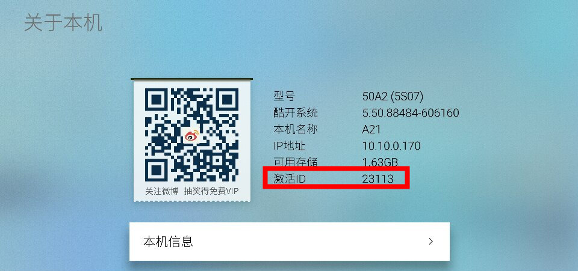
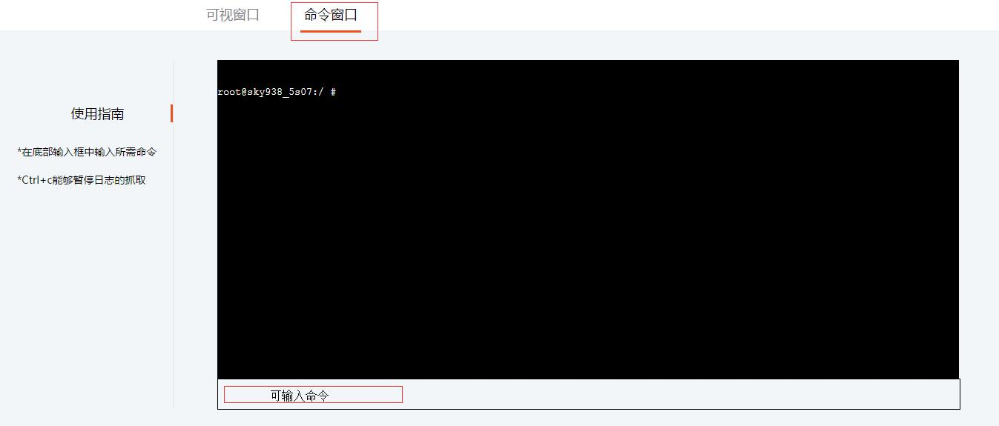

帮助文档
如何下载日志文件？
日志抓取完毕之后一般会自动下载,如果出现无法下载的问题，应该是由于浏览器的限制，点击如图所示位置

勾选允许显示弹出式窗口，然后完成。然后重新抓取日志便能够自动下载

系统使用指南
登录系统后，指引用户进入设置-->本机信息，查看激活ID，报给客服人员

客服人员依据激活ID在输入框中输入，从而连接上电视进行操作

工程师权限具有命令窗口使用权限，可通过命令进行日志查看

文件下载功能是指从电视下载到本地，预设了几个电视地址

文件上传功能指从本地上传到电视上，需要较高权限，存在一定风险